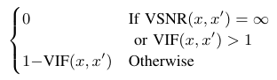

Visual changes in images¶
In this page, we first present the metric \(\Delta_v\), which measures human visual changes in images caused by transformations. Then, we identify a class of safety-related image transformations.
Measuring Visual Change (\(\Delta_v\))¶
Let an image \(x\), an applicable transformation \(T_X\) with a parameter domain \(C\) and a parameter \(c\in C\), s.t. \(x' = T_X(x,c)\) be given.
\(\Delta_v(x,x')\) is a function defined as follows:
The VSNR [Chandler_Hemami_07] and VIF [Sheikh_Bovik_06] implementation can be found through their papers or from this Github link and the additional required python library matlabPyrTools is available on this page.